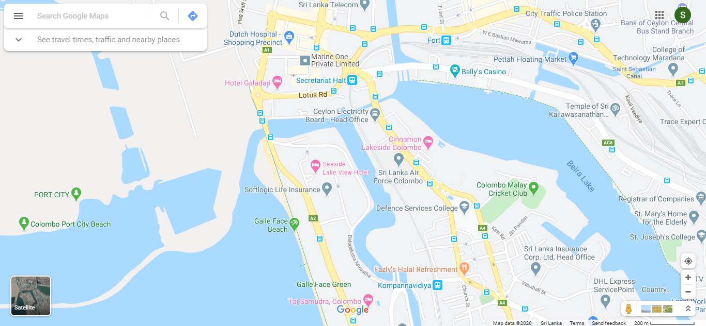

Location
The Hotel Seaside is Located on the Colombo, a coastline which
is renowned for its perfect combination sun and sand.With its beachfront Location
,the hotel is also very close to Colombo, which has a wide vareity of leisure
activities and restaurants pn offer.The town of Colombo is within walking distance of the hotel.
It is notable for its beautiful historic quarter with refurbished streets And
colourful plant plots, as well as the largest botanical park in Asia complete with
an orchidaruim, which opened in 2015.The GalleFace and countless golf courses round off
the area's attraction.

- 0 metres from Galleface beach
- 400 Port City
- 1.5 km from Taj-Samudra
- 2.5 km from seafront promenade
- 3 km from LakeSide
- 3 km from Hotel Galadari
- 5 km from Dutch Hospital
- 38 km from Bally's Casino
- 53 km from Colombo Cricket Club
- 25 km from katunayaka airport
Description
Nestling on the seafront with direct access to the beach, the Hotel Seaside is the
only superior category hotel in the town of Colombo.The hotel seamlesssly
combines Andalusian-style architecher with contemporary interior desing, whilst offering
comfortable rooms, terraces with spectacular views of the Mediterranem, a wide range of cuisine and
Despacio Spa Centre.In addition, the hotel programme (in summer), 7 meeting rooms, and Privilage, Exclusive
Rooms and service to ensure a perfect stay on the Costa del Sol.There are 11 exclusive golf courses in the vicinity
of the hotel.